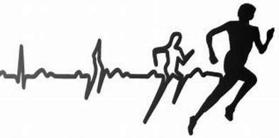
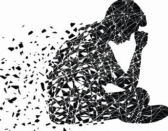

O sedentarismo é um inimigo silencioso que se instala em nossas vidas, minando nossa saúde física e mental. A falta de movimento tem consequências profundas, e é essencial compreender como ela afeta nosso bem-estar.
CONSEQUÊNCIAS NA SAÚDE FÍSICA

1. Obesidade:
O sedentarismo é um dos principais fatores que contribuem para o ganho de peso.
atividade física regular, nosso corpo acumula gordura, levando a
problemas metabólicos e doenças cardiovasculares.
2. Doenças Cardiovasculares:
A inatividade
enfraquece o coração e os vasos sanguíneos. A pressão arterial aumenta, o risco de infarto e derrame
cresce, e a circulação sanguínea se torna menos eficiente.
3. Diabetes:
A falta de exercício prejudica a regulação da glicose no sangue. O risco de desenvolver diabetes tipo 2
aumenta significativamente.
4. Perda de Massa Muscular e Óssea:
Músculos e ossos
precisam de estímulo para se manterem fortes. A inatividade leva à perda de massa muscular e à fragilidade óssea.
5. Inflamação e Sistema Imunológico:
O sedentarismo está associado a processos inflamatórios crônicos. Além disso, o sistema imunológico pode ficar comprometido, tornando-nos
mais suscetíveis a infecções.
CONSEQUÊNCIAS NA SAÚDE MENTAL

1. Depressão e Ansiedade:
A mente e o corpo estão intrinsecamente ligados. A falta de exercício afeta a produção de neurotransmissores como
serotonina e
dopamina, essenciais para o equilíbrio emocional. A prática regular de atividade física reduz os sintomas de depressão e ansiedade.
2. Autoestima e Autoeficácia:
O exercício melhora a autoimagem e a confiança. Sentir-se capaz de superar desafios físicos também fortalece a autoeficácia.
3. Prevenção de Transtornos Mentais:
O sedentarismo
aumenta o risco de transtornos mentais, como depressão e TDAH. A atividade física é uma ferramenta poderosa para prevenir e tratar essas condições.
4. Qualidade do Sono:
O movimento regular melhora a qualidade do sono. Pessoas ativas tendem a ter um sono mais profundo e reparador.
5. Estresse e Bem-Estar: Exercícios liberam endorfinas, reduzindo o estresse e promovendo o bem-estar geral.
Considerações Finais:
Em resumo,
MOVIMENTE-SE! Seja uma caminhada, uma aula de dança ou uma sessão de ioga,
qualquer atividade é melhor que nenhuma. Cuide de
seu corpo e mente, e lembre-se de que a saúde é um tesouro precioso que merece ser cultivado com carinho e dedicação.